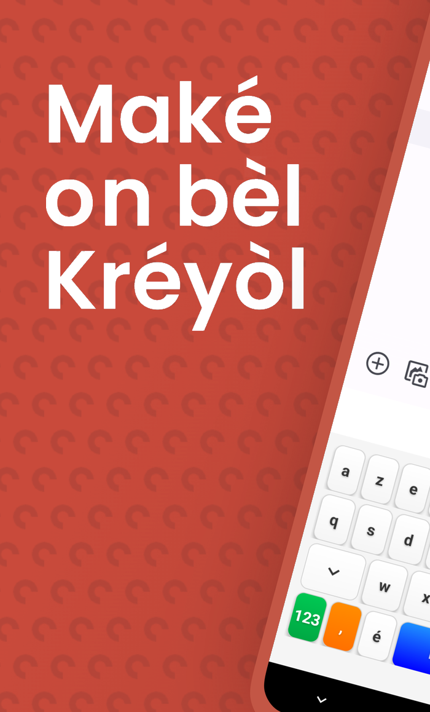
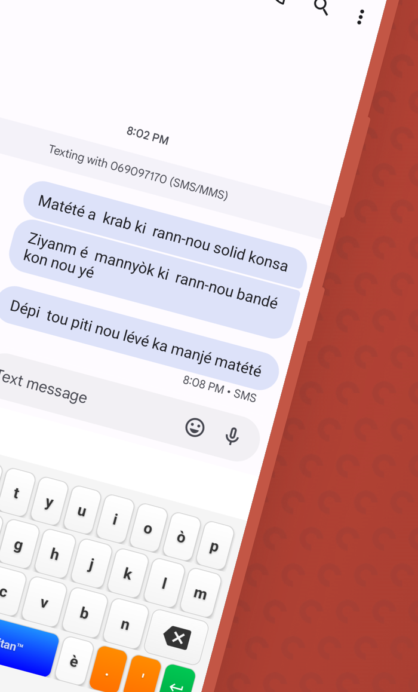
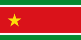

Pourquoi ce clavier ?
- 🤔Ton téléphone refuse tous les mots créoles et « corrige » ton kréyòl en français ?
- 😤Tu doutes de l'orthographe à chaque message ?
- ➡️Klavyé Kréyòl Karukera est fait pour toi.


Disponible sur Google Play
« An kréyòl nou ka palé, an kréyòl nou ka maké ! »
📲Flash le code,
installe Klavyé Kréyòl
100%
gratuit
zéro pub
famibelle.github.io/KreyolKeyb/ · Créé par un Guadeloupéen pour les Guadeloupéens

· contact@potomitan.io
Pourquoi ce clavier ?
- 🤔Ton téléphone refuse tous les mots créoles et « corrige » ton kréyòl en français ?
- 😤Tu doutes de l'orthographe à chaque message ?
- ➡️Klavyé Kréyòl Karukera est fait pour toi.
Disponible sur Google Play
« An kréyòl nou ka palé, an kréyòl nou ka maké ! »
📲Flash le code,
installe Klavyé Kréyòl
100%
gratuit
zéro pub
famibelle.github.io/KreyolKeyb/ · Créé par un Guadeloupéen pour les Guadeloupéens · contact@potomitan.io